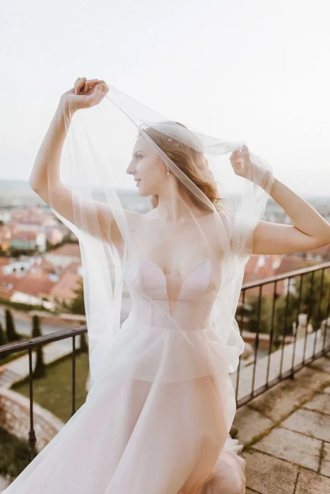
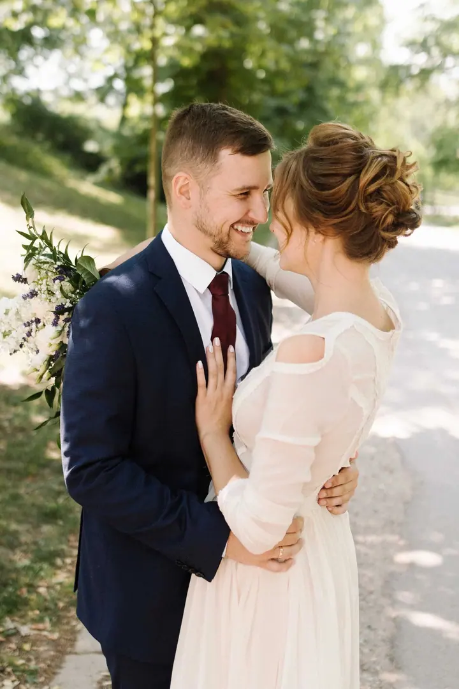
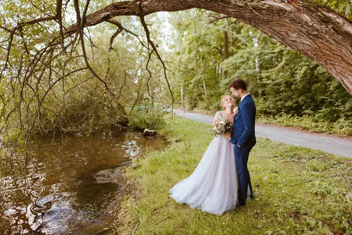

jedna
Svatby
Fotím celý svatební den od obřadu po večerní tanec. Svatby začínají od 7 500 Kč.

Svatební a portrétní fotografka · Brno, Jižní Morava, Znojmo

Jmenuji se Dina Khusainova a v Brně fotím svatby, rodiny a portréty. Mám ráda klid, opravdové emoce a lidi, kteří se k sobě tulí, i když se zrovna nikdo nedívá.
Více o mně
Co fotím
jedna
Fotím celý svatební den od obřadu po večerní tanec. Svatby začínají od 7 500 Kč.
dvě
Portrétní focení s důrazem na krásu, emoce a klid. Lidé jsou pro mě vždycky tím nejvíc inspirujícím.
Klidné a pohodové focení pro celou rodinu. Jde mi o to, aby na fotkách byla vidět láska mezi vámi.
Lidé pro mě vždycky byli tím nejvíc inspirujícím.


Za objektivem
Vyrostla jsem v Rusku a do Evropy jsem se přestěhovala ve 22 letech. Česká republika se stala mým novým domovem a po pár letech mě láska k fotografii dovedla až k tomu, že se jí věnuji profesionálně.
Lidé pro mě byli vždycky to nejvíc inspirující. Když můžu zachytit jejich krásu, emoce a lásku, dodává mi to víc energie než cokoli jiného. Proto jsem se rozhodla věnovat portrétní a svatební fotografii.
Styl mé práce o mně hodně vypovídá: je klidný, pokojný, někdy možná až moc tichý, ale nikdy příliš hlasitý. Žiji v Brně, ale ve fotografii žádné hranice nejsou. Pokud plánujete svatbu, rodinné nebo portrétní focení a chcete se mnou spolupracovat, ráda se od vás dozvím víc.
Dina
Pošlete mi datum, místo a pár slov o tom, co plánujete. Ozvu se vám s termínem a podrobnostmi.
Probereme, jak si den nebo focení představujete, kde budeme fotit a na čem vám nejvíc záleží.
Pracuji v klidu a nenápadně, abyste se mohli věnovat sobě a svým blízkým. Na chvíli si vás pak vezmu stranou na společné portréty.
Fotky pečlivě vyberu a upravím a pošlu vám je v online galerii, kde je snadno stáhnete a nasdílíte rodině.
Portfolio
Otázky
Svatební focení začíná od 7 500 Kč. Výsledná cena záleží na délce dne a na tom, co všechno chcete mít nafocené. Napište mi a pošlu vám nabídku na míru.
Ano. Žiji v Brně a ráda fotím po celé jižní Moravě, ale ve fotografii pro mě žádné hranice nejsou. Ráda přijedu i dál.
Ano, fotím také rodiny a portréty. Postup je podobný, jen je focení kratší a víc v klidu.
Vůbec ne. Můj styl je klidný a tichý, nikoho do ničeho netlačím. Většina fotek vzniká přirozeně, zatímco se věnujete jeden druhému.